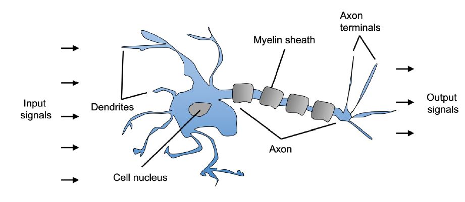
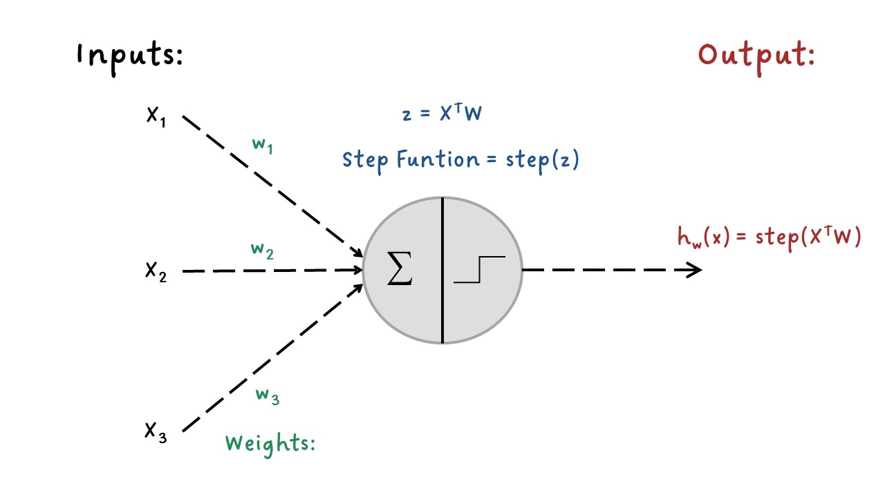
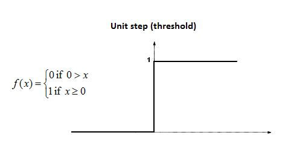
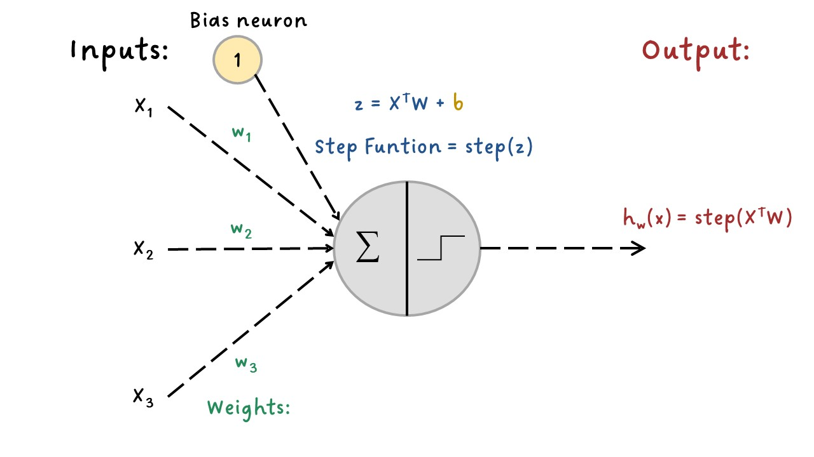
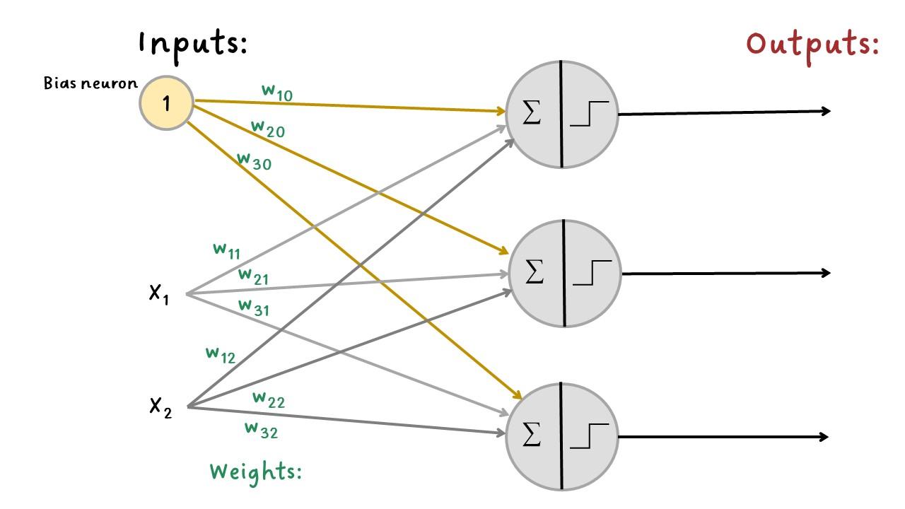

Introducción Redes Neuronales Artificiales¶
Una Red Neuronal Artificial (RNA) o Artificial Neural Network (ANN) es un modelo de aprendizaje automático inspirado en las redes de neuronas biológicas que se encuentran en nuestros cerebros.
Las RNA abordan tareas grandes y complejas de aprendizaje automático como clasificar millones de imágenes, servicios de reconocimiento de voz, recomendar videos sobre cientos de millones de usuarios, entre otros.
Las RNA fueron introducidas en 1943 por el neurofisiólogo Warren McCulloch y el matemático Walter Pitts, estos presentaron la red neuronal conocida como McCulloch-Pitts. Esta fue la primera arquitectura de red neuronal artificial; sin embargo, las Redes Neuronales Artificiales ha pasado por períodos donde el interés se ha perdido totalmente como en la década de 1960. A principios de la década de 1980, se inventaron nuevas arquitecturas y se desarrollaron mejores técnicas de entrenamiento, lo que provocó un resurgimiento del interés por el conexionismo, pero el progreso fue lento. En la década de 1990 el interés se centró en las Máquinas de Vectores de Soporte (SVM - Support Vector Machines). Estas técnicas parecían ofrecer mejores resultados y bases teóricas más sólidas que las RNA, por lo que una vez más se suspendió el estudio de las redes neuronales.
Actualmente estamos en una época donde las técnicas de mayor interés del aprendizaje de máquina son las RNA, con frecuencias estas superan a otras técnicas del Machine Learning en los grandes y complejos problemas. Esto también ha sido posible por el gran poder de cómputo que se ha incrementado desde los 1990, también gracias a la industria de los video juegos porque ha estimulado la producción de tarjetas GPU. Además, las plataformas en la nube han hecho que este poder de cómputo sea accesible para todos.
Neuronas biológicas¶
Las neuronas biológicas se encuentran principalmente en el cerebro y están compuestas por un cuerpo celular con muchas extensiones ramificadas llamadas dendritas más una extensión larga llamada axón. El axón se divide en muchas ramas llamadas telodendrias y en la punta de estas ramas hay estructuras minúsculas llamadas terminales sinápticas o simplemente sinapsis que están conectadas a las dendritas de otras neuronas.
En general, las neuronas biológicas producen impulsos eléctricos que viajan desde los axones hasta las sinapsis, estás últimas liberan señales químicas llamadas neurotransmisores. Cuando una neurona recibe una suficiente cantidad de estos neurotransmisores dispara sus propios impulsos eléctricos.

NeuronasBiologicas¶
El Perceptrón:¶
El Perceptrón es una arquitectura de las RNA más simples inventada por Frank Rosenblatt en 1957. Esta RNA se denomina TLU (threshold logic unit).
Las entradas y salidas son números, cada conexión de entrada está asociada a un peso \(w\). La TLU calcula la suma ponderada de sus entradas \((z = w_1 x_1 + w_2 x_2 + ⋯ + w_n x_n = X^T W)\), luego aplica una función escalonada (step funtion) a esa suma ponderada y genera el resultado: \(h_w (x) = step(z)\), donde \(z = X^T W\).

Perceptron¶
Step Funtion:

StepFuntion¶
Generalmente se agrega una variable de bias (sesgo) que sería \(x_0=1\): generalmente se representa usando un tipo especial de neurona llamada neurona de sesgo (bias neuron), que genera el valor de 1 todo el tiempo.

Bias_neuron¶
Las salidas de la capa de neuronas para varias instancias a la vez se pueden calcular en la siguiente forma matricial:
Donde,
\(\phi\) representa la función escalonada.
\(X\) representa la matriz de las variables de entrada. En las filas se encuentras las observaciones o instancias y en las columnas las variables.
La matriz pesos \(W\) contiene todos los pesos de conexión excepto los de las neuronas bias. Tiene una fila por cada neurona de entrada y una columna por neurora en la capa.
El vector de bias \(b\) contiene todos los pesos de conexión entre la neurona bias y las demás neuronas. Cada neurona tiene un término de bias.
Entrenar este Perceptrón significa encontrar los valores correctos para los pesos \(w_1\), \(w_2\), \(w_n\).
Los perceptrones se entrenan mediante una regla que tiene en cuenta el error que comete la red cuando realiza una predicción; la regla de aprendizaje de Perceptrón refuerza las conexiones que ayudan a reducir el error. La regla se muestra en la siguiente ecuación que corresponde al algoritmo de Gradient Descent.
Donde,
\(w_{i,j}\) es el peso de la conexión entre la neurona de entrada \(i\) y la neurona de salida \(j\).
\(x_i\) es el valor de entrada \(i\) de la observación o instancia de entrenamiento actual.
\(\hat{y}_j\) es el resultado de la neurona de salida \(j\) para la observación de entrenamiento actual.
\(y_j\) es el valor objetivo de la neurona de salida \(j\) para la observación de entrenamiento actual. Es el valor real del resultado.
\(\eta\) es la tasa de aprendizaje.
El límite de decisión de cada neurona de salida es lineal, por lo que los perceptrones son incapaces de aprender patrones complejos (al igual que los clasificadores de regresión logística).
Tenga en cuenta que, a diferencia de los clasificadores de regresión logística, los perceptrones no generan una probabilidad de clase; más bien, hacen predicciones basadas en un umbral estricto. Esta es una de las razones para preferir la regresión logística que a los perceptrones.
Dense layer:
Un Perceptrón se compone simplemente de una sola capa de neuronas, con cada neurona conectada a todas las entradas.
Cuando todas las neuronas de una capa están conectadas a cada neurona de la capa anterior (es decir, sus neuronas de entrada) o a los valores de entrada, la capa se denomina capa totalmente conectada o capa densa (dense layer).
La siguiente figura muestra un perceptrón con dos entradas y tres salidas con el que se puede clasificar tres clases binarias diferentes, lo que lo convierte en un clasificador de salida múltiple. Este ejemplo muestra una capa densa.

Tres_salidas¶
Cambio a Activation Funtion:
Para que este algoritmo funcione correctamente, se hicieron cambios en la arquitectura, donde se reemplaza la función escalonada (TLU) por la función de activación (activation funtion) logística o sigmoide.
Donde,
\(z=XW+b\)
La función sigmoide tiene forma de \(S\) y la salida oscila entre \(0\) y \(1\).
Para la función de activación lineal (linear) el algoritmo de gradiente descendente utiliza las siguientes fórmulas en cada iteración para actualizar los pesos en el backward pass:
Donde,
Para cualquier función de activación podemos modificar las fórmulas agregando la derivada de la función de activación.
Donde,
\(g(z)\): es la función de activación que se está usando en la neurona.
Por ejemplo, para la función de activación Sigmoide, su derivada es:
Así que en la actualización de los pesos la fórmula quedaría:
Luego se explicarán otras funciones de activación.
Cerca de la década de 1970 los investigadores esperaban mucho más de los perceptrones, y algunos estaban tan decepcionados que abandonaron las RNA por completo a favor de otras técnicas, pero resulta que algunas de las limitaciones de los perceptrones pueden eliminarse apilando varios perceptrones. La Red Neuronal Artificial resultante de esto se denomina perceptrón multicapa (MLP - Multilayer Perceptron).